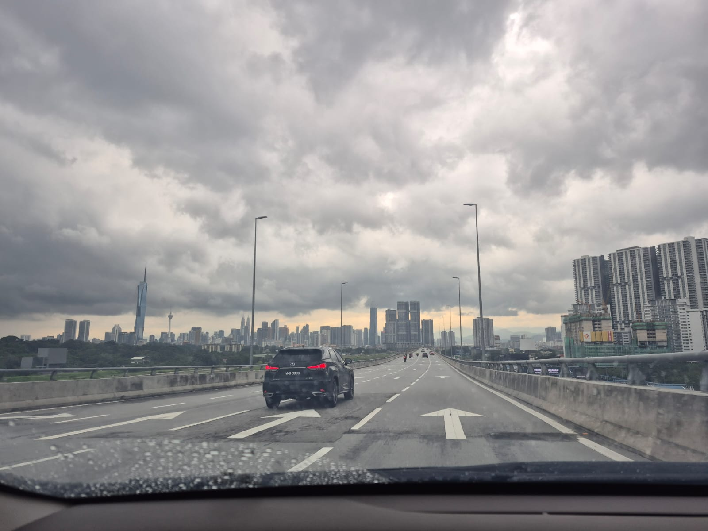

Completely different mood from Penang. Super busy, metallic noise vs. our small and cute penang
We found a corner at the Towers. It was massive. I really loved those towers. Hehe
I wonder how hard your brother was judging us. (Click stack to shuffle)
And just Us.
The truth is that it was a potentially beautiful place, but in the end I think that the atmosphere, with so many people and feeling somewhat unwelcome by the people who work there, made me want to leave. I loved the monkeys though.
Expressway to our hotel. I have to confess that even though you were freaking out the whole time we were on the third level, I was taking pictures and giggling. I can't think of anything that excites a greater sense of childlike wonder than to be in a country where you are ignorant of almost everything. Suddenly everything became a mystery. Anything is an excuse to be surprised. That day I was impressed by the complexity of Kuala Lumpur and I couldn't have been happier to share your country with you.
We finally escaped the car and went to the park with your brother. low-key our chauffeur and guide.
I loved walking with you, seeing how you interact and buy things for both of us. It gives me that eternal feeling that our trips are in themselves a reminder of what we can be and what we want in this life. For my part, I would love to see you walking along the shelves, looking at and trying food, and occasionally buying a treat. I still remember the time I walked behind you in that Chinese store in Melbourne, following you as we were going to cook malatang. And I couldn't stop thinking, wow, this woman is beautiful. Every time you turned, you would disappear from my sight, only to reappear as beautiful as ever.
I was a little nervous about meeting all your friends at once. But at the same time, it's a blessing. I stand there quietly, just listening to you. I watch you laugh with them, talk about people I don't have the pleasure of knowing, and remember stories that happened long before I appeared on your radar. It's a strange feeling, you know? A little overwhelming, but also revealing. As I listen to them, I realize that you have a whole emotional infrastructure, a huge safety net that I'm not part of. It's years of stories, inside jokes, and shared scars that sustain you. Thank you for letting me in, for letting me be a spectator of the best version of yourself, and for allowing your stories to gradually become mine as well. I hope ill never let downn your friends on you.
Well, what can I say? Traveling from Spain to eat paella in Malaysia may be one of life's great ironies. In the end, even though I didn't think it was a good idea, your friends treated me really well, I felt so welcome, and best of all, the paella wasn't bad and the rest of the food was very good.
Fighting with Truffle, because after all those scars I don't thing he was playing.
Sometimes I wonder what goes through your mind every time you get drunk. I'm not judging, but you seem so delicate, so fragile. Whenever we drink, I worry about you, I still seek your body, I still seek your affection, I still love you. But there's something instinctive in me every time you're not in your full faculties. Even if I'm tipsy or a little horny, I don't care, what I want is for nothing to happen to you, I don't want you to suffer, I don't want you to get tired. I want to be with you so you're not afraid of anything, so you feel that my hand is always holding you, even if you can't see it. Sometimes this is difficult when we're apart, but when we're together, I'm so lucky to be able to show you that. You're the only person I want to take care of more than my own life.
We left the same day. Same airport, different terminals. It is painful, leaving every time
Post-depression trip Andrés.
Hola Hermosa,
I am writing this to you today with my blood still a bit hot from our fight a while ago. I was furious as you might know. But the more I think about that anger the more I realize what it really means. I miss you so much that the slightest noise in our connection breaks me down. I feel it every time you leave. Your absence is a figure that always leaves me in a state of suspension. The silence of the house after you go is not a relief. It is a deafening noise that reminds me that this space has lost its center. Everything that was chaos when you were here like the objects out of place and our overlapping voices now turns into a frozen order that I would rather see broken a thousand times by your presence.
I even miss our arguments the tears over silly things and the exhaustion of the long trips we have taken. Because in those moments even though we were killing each other we were alive. I prefer a thousand times the stress of an uncertain path by your side over the safety of an empty room. In the end what remains of this whole travel summary is not the landscape we saw in Salento or in the Cocora Valley but the fact that we were together in the middle of the storm.
It is about building those memories we have lived and the life we deserve since I know I work with my eyes on that future. A future where we do not fight over small things because we cannot call each other or because we cannot spend time together so it can become something I can touch. My motivation does not come from ambition but from the need for you to stop being a voice in my ears and become the person who sleeps by my side.
My only absolute goal is to save every cent and dedicate every hour of my work so I can get lost with you on the dates that belong to us. Do not forget that in August we have a promise. I want to travel the whole world with you. I want to kiss you on every continent and celebrate every birthday by your side. Because I have understood something in this time apart. Without you the most incredible landscapes are just silent scenes without color and the most beautiful places on the planet are nothing more than empty coordinates on a map. I want to recognize in the world what I have lived with you. The world only takes on color when your eyes reflect it.